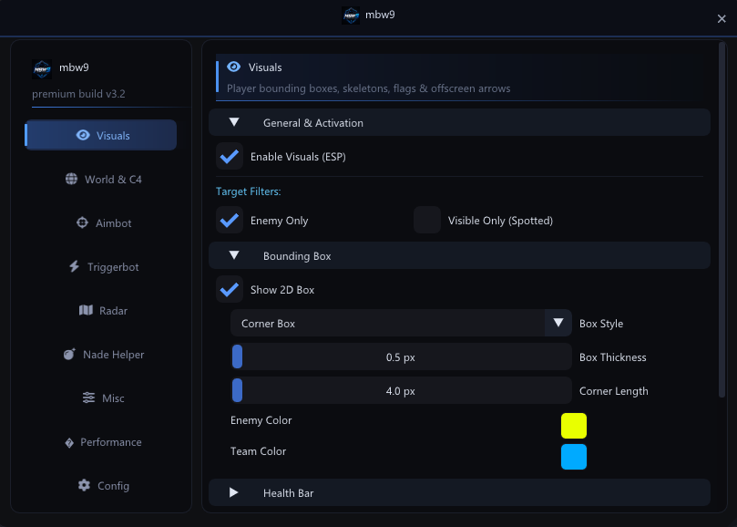

An external overlay for Counter-Strike 2
mbw9 reads game memory from usermode with NtReadVirtualMemory and draws a transparent DirectX 11 window on top of CS2. No kernel driver, no installer, one 1.3 MB executable.
Synced with CS2 build 14188, Sep 30 2026. Windows 10/11 x64.

What it does
Organised like the menu itself: one tab per module.
Visuals
- 2D boxes, full or corner style, per-team colors
- Skeleton with head dot and shadow background
- Health bar with dynamic color, 4 positions, adjustable thickness
- Name, weapon, distance, C4 carrier and flashed badges
- Snaplines and offscreen arrows
- Pixel offsets for every element
Aimbot
- Head, neck, chest or pelvis targeting with FOV circle and smoothing
- Recoil control: strength, smoothing, start after N shots
- Humanizer: acquisition delay, micro jitter, overshoot, reaction variance, velocity prediction
- Silent aim (pSilent) with 3D sphere FOV, tick sync and prediction
- Flash, smoke and visibility checks
Triggerbot
- Crosshair-based auto-fire on a hold key (ALT by default)
- Random min/max delay
- Rapid fire for pistols
- Burst mode with count and delay
Radar
- Separate 2D radar window, draggable and resizable, 11 maps
- Blips with names, direction cones and health color
- Zoom and scan range, deathmatch mode
- Player Positions window with zone callouts, TAB for enemies only
- Spectator minimap on F5
World and C4
- Draggable bomb panel: explosion timer, defuse timer with kit status, SAFE / LETHAL indicator
- In-world bomb badge with A/B site and timer
- Dropped weapons with ammo, hostages, map objects
- Grenade trajectory, projectile tracking and danger warnings
- Nade Helper: saved lineups per map and grenade, import and export
Crosshair added Sep 30
- Classic cross and static quadrant styles
- Outline color and thickness, gap down to -20 px
- Custom scope dot with scale and color
- Grenade crosshair during freeze time, visible with every weapon
Misc
- Bunny hop with auto strafe
- FOV changer, 60 to 140 degrees
- No flash with adjustable alpha, silent reload
- Spectator list
- Stream proof: the overlay is excluded from screen capture (
WDA_EXCLUDEFROMCAPTURE) - Config profiles through a file dialog
Under the hood
- Memory
NtReadVirtualMemory, batched, usermode only- Overlay
- Transparent topmost DirectX 11 window with ImGui, VSync toggle
- Entity cache
- 125 Hz thread protected by a seqlock, plus chunk and class-name caches to avoid repeated reads
- Binary
- About 1.3 MB, static
/MTbuild, no VC++ redistributable - Toolchain
- MSVC 2022,
/O2 /GL /MT /std:c++17, x64 only
Setup
- Extract every file of the archive into one folder.
External.exeneedsLOGO.pngandfa-solid-900.ttfnext to it, or the menu will not load. - Start Counter-Strike 2 in Fullscreen Windowed or Windowed. The overlay cannot draw over exclusive fullscreen.
- Right-click
External.exeand choose Run as administrator. - Press INSERT in game.
Requires Windows 10/11 x64, CS2 running, administrator rights.
Hotkeys
| INSERT | Show or hide the menu |
| ALT | Triggerbot hold key (changeable) |
| F5 | Spectator minimap |
| TAB | Enemies only in Positions |
| Mouse drag | Move the menu, radar and bomb panel |
FAQ
Is it undetected?
Nobody can promise that. Valve and third-party anti-cheats can ban accounts, and a VAC ban is permanent. You use it at your own risk.
Why does it need administrator rights?
It opens a handle on the CS2 process to read its memory. Windows only allows that from an elevated process.
The overlay does not appear.
Check that CS2 is in Fullscreen Windowed or Windowed, that External.exe runs as administrator, and that CS2 was already running when you started it.
The menu opens without icons or logo.
fa-solid-900.ttf and LOGO.png must sit in the same folder as External.exe.
My antivirus flags the file.
Programs that read another process's memory are often flagged. The executable is unsigned, so only download it from this site or the GitHub repository.
Does the game update break it?
Usually, yes. Offsets change with CS2 updates, so wait for a build that matches the current game version. The current one targets build 14188.
Changes
- v3.3 Sep 30 2026
- Crosshair module: two styles, outline, negative gap, scope dot, grenade crosshair. Offsets updated for CS2 build 14188.
- v3.2 GitHub release
- Visuals, aimbot with humanizer and pSilent, triggerbot, radar, nade helper, misc, 125 Hz entity cache.
Download
Older builds and source of truth: GitHub. Help and bug reports: Discord.